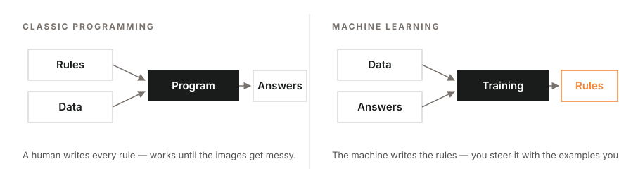
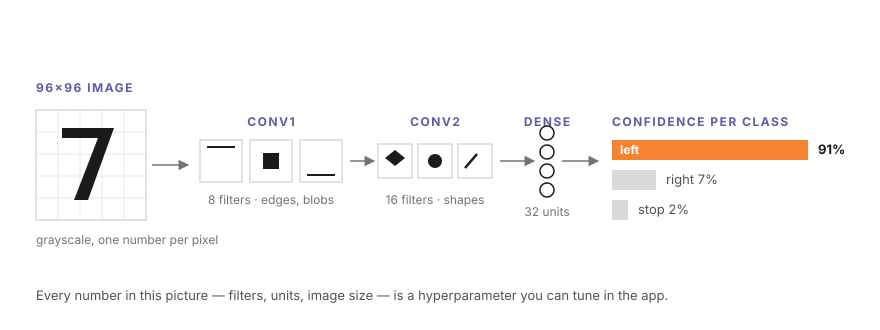
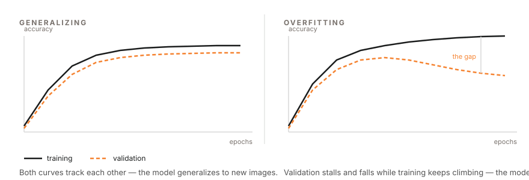
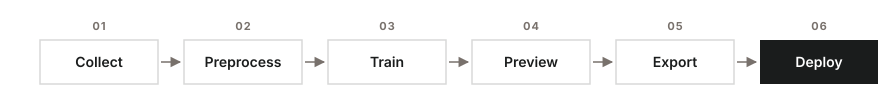

Edge AI Vision Workshop — Pre-lab Manual
This manual prepares you for the Edge AI Vision workshop. Complete the background reading (about 15 minutes) and the software installation (about 30 minutes) before the session. Students who arrive with the installation verified through the self-check in Section 4 can devote the full session to the project.
1. Overview of the Workshop
The workshop consists of a 45-minute lesson followed by a 90-minute project session. In the lesson, the instructor trains a small neural network to recognize road signs live on a microcontroller, demonstrating the complete workflow. In the project session, each team applies the same workflow to its own system: a digit recognizer (0–9) that runs on the same board.
All work runs on real hardware:
- The ESP32-P4 development board with a camera module (provided at the workshop)
- The TFLiteTraining desktop application, which trains image classifiers without programming
- TensorFlow Lite Micro, Google's runtime that executes the trained model on the microcontroller itself
No programming experience is required. Every step in the lab manual is menu-driven and written out in full.
2. Background Reading (15 minutes)
This section introduces the concepts used in the lesson. The material does not need to be memorized, but familiarity with these terms makes the lesson considerably easier to follow.
2.1 Rules versus learning
A conventional program follows rules written by a programmer: "if the pixel is dark, do X." Such rules are sufficient for blinking an LED, but they cannot recognize a road sign in a photograph — no one can write those rules by hand. Machine learning inverts this arrangement: instead of receiving rules, the computer receives many labeled examples (images with the correct answer attached) and derives the rules itself. This process is called training.

Inputs and outputs of classic programming versus machine learning2.2 Convolutional neural networks
A Convolutional Neural Network (CNN) is the standard neural-network architecture for images. It can be understood as a stack of small feature detectors: the first layers detect simple patterns such as edges and blobs; deeper layers combine these into shapes and objects; the final layer outputs a confidence for each class — for example, "left arrow: 91%, right arrow: 7%, wall: 2%". The CNN used in this workshop is small enough to run on a microcontroller in real time.

A small CNN, end to end: image → feature detectors → one confidence score per class2.3 Overfitting and validation
A model may memorize its training images instead of learning the underlying concept — like a student who memorizes past examination papers but cannot answer a new question. This failure mode is called overfitting. It is detected by holding part of the dataset out of training (the validation split) and evaluating the model on those unseen images. The project session applies this principle directly: each digit recognizer is tested on handwriting that was never part of its training data.

Reading the training curves: healthy training (left) versus overfitting (right)2.4 Edge AI and quantization
Sending camera images to a server introduces delay and requires network access. Edge AI runs the model directly on the device instead. To fit the microcontroller's memory, the model is quantized to int8 — each number stored as 1 byte instead of 4 — which makes it roughly 4× smaller and faster at a negligible cost in accuracy. TensorFlow Lite Micro (now called LiteRT for Microcontrollers) is the runtime that executes such models on microcontrollers in as little as 16 KB of memory.
2.5 The ESP32-P4 development board
The ESP32-P4 is a high-performance microcontroller from Espressif. It provides a dual-core processor, camera support (for example the IMX219 module), and sufficient processing speed to run image classification in real time. It is programmed with the Arduino IDE over a USB cable.
2.6 The TFLiteTraining application
TFLiteTraining is a desktop application (inspired by Google's Teachable Machine) that provides the complete training pipeline in a single window: collect images → preprocess (crop and clean) → train → preview live → export the model as files ready for the board.

The six-step workflow, applied to road signs in the lesson and to digits in the project3. Software Checklist (complete before the session)
Install the following items in order. The versions matter: the workshop instructions assume them.
| # | Item | Version | Where / Notes |
|---|---|---|---|
| 1 | Arduino IDE | 2.3.10 or higher | https://www.arduino.cc/en/software |
| 2 | esp32 board package | exactly 3.3.1 | In the IDE: Settings → Additional Boards Manager URLs → add https://dl.espressif.com/dl/package_esp32_index.json → OK. Then Tools → Board → Board Manager → search "esp32" → install esp32 by Espressif Systems, version 3.3.1 |
| 3 | esp32_mannual core | as provided | Unzip esp32_mannual.zip (distributed with this manual) into your Arduino hardware folder — see the paths below |
| 4 | TFLiteTraining app | as provided | Install from the .dmg (macOS) or .exe (Windows) distributed with this manual. Do not launch it yet |
| 5 | template project | template.tmproj |
Download it; it is opened during the workshop |
Installation path for the esp32_mannual folder — after unzipping, the final path must be:
- macOS:
/Users/<you>/Documents/Arduino/hardware/esp32_mannual - Windows:
C:\Users\<you>\Documents\Arduino\hardware\esp32_mannual
If the Arduino/hardware folder does not exist, create it.
4. Self-Check (2 minutes, the day before)
- Open the Arduino IDE
- Open Tools → Board
- Confirm that an entry named ESP32_mannual appears in the list, containing the ESP32P4 Dev Module
If the entry is present, the installation is complete. If it is absent, the esp32_mannual folder was placed in the wrong location — verify the path against Section 3.
5. What to Bring
- A laptop with the software in Section 3 installed and fully charged (power sockets may be limited)
All other materials — the car kit, the USB-C cable, and the stationery used in the project — are provided at the session. The project lab manual lists them in full.
6. Troubleshooting the Installation
The port does not appear in the IDE. Use another USB port and another cable; charge-only cables are the most common cause. On Windows, the CH34x/CP210x driver may be required.
"esp32" appears in Board Manager, but version 3.3.1 is not listed. Confirm that the Espressif board URL (Section 3, item 2) was added before opening Board Manager, then refresh.
macOS reports that the application "cannot be opened because it is from an unidentified developer". Right-click the application → Open → Open.
An older Arduino IDE is already installed. Install 2.3.10 or higher alongside it and use that version for the workshop.
7. Workshop Materials
All workshop materials — the lesson slides and the project lab manual — are published on the workshop page from which this manual was downloaded.